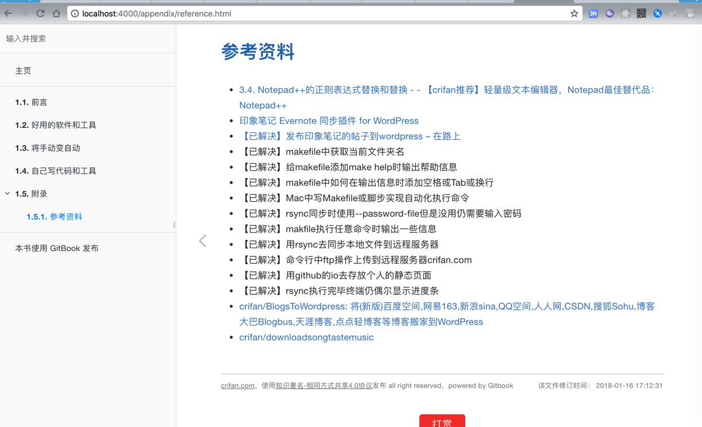
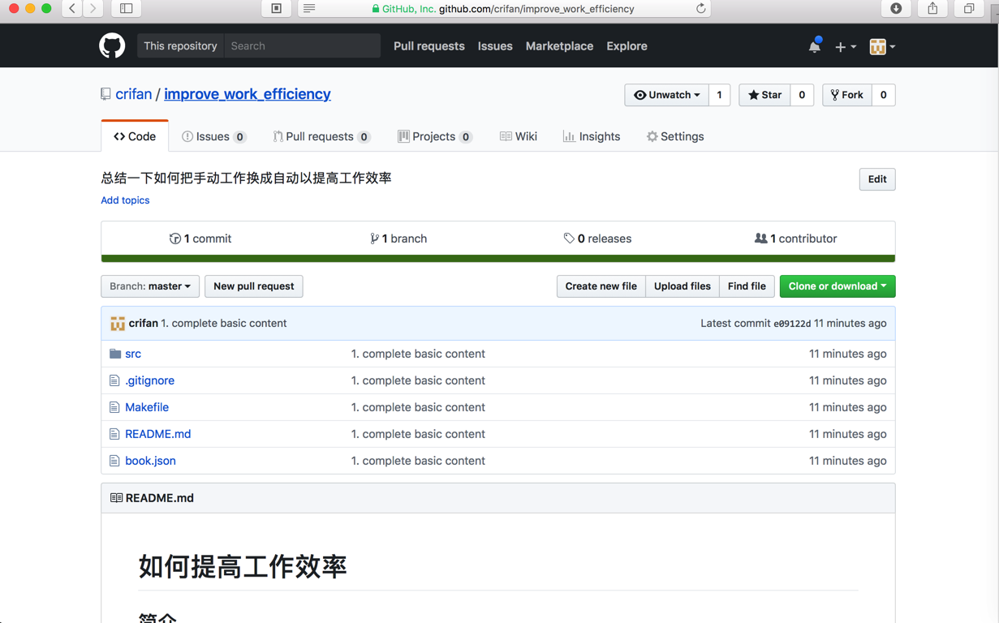

电子书制作过程
新建一个Gitbook电子书，主要有两种方式：
Gitbook Editor：用Gitbook Editor创建book+同步到远端git仓库- 关于
Gitbook Editor的使用，详见：Gitbook Editor章节
- 关于
纯命令行：gitbook-cli及相关的成套工具- 直接用
git创建本地仓库 - 用
gitbook init创建本地的book - 用
git同步到远端仓库
- 直接用
下面就来介绍，如何用gitbook的命令行工具，去制作自己的电子书。
准备工作
我们需要一个git代码仓库，用于保存自己的gitbook的源码。
此处选用github。所以先去github中，新建一个空的git仓库，比如：
https://github.com/crifan/improve_work_efficiency.git
初始化gitbook
用：
gitbook init
去创建一个空的book：
举例：
➜ Import gitbook init improve_work_efficiency
warn: no summary file in this book
info: create README.md
info: create SUMMARY.md
info: initialization is finished
编辑gitbook的markdown源码
去编辑相关的gitbook的markdown的源码，以及相关的book.json等内容
比如我去拷贝别的book的内容过来后，文件如下：
➜ improve_work_efficiency git:(master) ✗ git status
On branch master
No commits yet
Untracked files:
(use "git add <file>..." to include in what will be committed)
.gitignore
Makefile
README.md
book.json
src/
nothing added to commit but untracked files present (use "git add" to track)
然后再继续去编辑内容
gitbook install安装插件
在book.json配置好之后，要去安装对应的gitbook的插件。
improve_work_efficiency git:(master) ✗ gitbook install
info: installing 16 plugins using npm@3.9.2
info:
info: installing plugin "theme-comscore"
info: install plugin "theme-comscore" (*) from NPM with version 0.0.3
/Users/crifan/GitBook/Library/Import/improve_work_efficiency
└── gitbook-plugin-theme-comscore@0.0.3
info: >> plugin "theme-comscore" installed with success
info:
info: installing plugin "search-plus"
runTopLevelLifecycles → 3 ▐ ╢████████████████████████████████████████████████████████████████████████████████████████████████████████████████████████████░░░░╟
/Users/crifan/GitBook/Library/Import/improve_work_efficiency
├─┬ gitbook-plugin-search-plus@1.0.3
│ └── html-entities@1.2.0
└── gitbook-plugin-theme-comscore@0.0.3
...
info: >> plugin "alerts" installed with success
info:
info: installing plugin "toolbar-button"
postinstall:gitbook-plugi ▌ ╢███████████████████████████████████████████████████████████████████████████████████████████████████████████████████████████░░░░░╟
/Users/crifan/GitBook/Library/Import/improve_work_efficiency
├── gitbook-plugin-alerts@0.2.0
├── gitbook-plugin-copy-code-button@0.0.2
├── gitbook-plugin-disqus@0.1.0
├── gitbook-plugin-donate@1.0.2
├── gitbook-plugin-expandable-chapters-small@0.1.7
├── gitbook-plugin-ga@1.0.1
├── gitbook-plugin-github-buttons@3.0.0
├── gitbook-plugin-prism@2.3.0
├── gitbook-plugin-prism-themes@0.0.2
├── gitbook-plugin-search-plus@1.0.3
├── gitbook-plugin-sharing-plus@0.0.2
├── gitbook-plugin-sitemap-general@0.1.1
├── gitbook-plugin-splitter@0.0.8
├── gitbook-plugin-tbfed-pagefooter@0.0.1
├── gitbook-plugin-theme-comscore@0.0.3
└── gitbook-plugin-toolbar-button@0.0.1
info: >> plugin "toolbar-button" installed with success
本地调试
然后用我自己写的一键发布中的Makefile去调试：
➜ improve_work_efficiency git:(master) ✗ make debug
--------------------------------------------------------------------------------
Author : crifan.com
Version : 20171231
Function: Auto use gitbook to generated files: website/pdf/epub/mobi; upload to remote server; commit to github io repo
Run 'make help' to see usage
--------------------------------------------------------------------------------
rm -rf /Users/crifan/GitBook/Library/Import/improve_work_efficiency/debug
mkdir -p /Users/crifan/GitBook/Library/Import/improve_work_efficiency/debug
gitbook serve /Users/crifan/GitBook/Library/Import/improve_work_efficiency /Users/crifan/GitBook/Library/Import/improve_work_efficiency/debug
Live reload server started on port: 35729
Press CTRL+C to quit ...
info: 23 plugins are installed
info: 19 explicitly listed
info: loading plugin "search-plus"... OK
info: loading plugin "disqus"... OK
info: loading plugin "prism"... OK
info: loading plugin "prism-themes"... OK
info: loading plugin "github-buttons"... OK
info: loading plugin "splitter"... OK
info: loading plugin "sharing-plus"... OK
info: loading plugin "tbfed-pagefooter"... OK
info: loading plugin "expandable-chapters-small"... OK
info: loading plugin "ga"... OK
info: loading plugin "donate"... OK
info: loading plugin "sitemap-general"... OK
info: loading plugin "copy-code-button"... OK
info: loading plugin "alerts"... OK
info: loading plugin "toolbar-button"... OK
info: loading plugin "livereload"... OK
info: loading plugin "fontsettings"... OK
info: loading plugin "theme-comscore"... OK
info: loading plugin "theme-default"... OK
info: found 6 pages
info: found 1 asset files
warn: "options" property is deprecated, use config.get(key) instead
warn: "options.generator" property is deprecated, use "output.name" instead
init!
finish!
info: >> generation finished with success in 1.3s !
Starting server ...
Serving book on http://localhost:4000
Restart after change in file src/good_tool_soft/README.md
然后即可在浏览器打开：
去看自己的book的内容了：

把gitbook源码上传到远程仓库中
接着就是把gitbook的源码去上传到远程的github的git仓库中。
如果你对git操作很熟悉，可以忽略下面内容而自行操作。
git创建本地仓库
➜ Import cd improve_work_efficiency
➜ improve_work_efficiency ll
total 16
-rw-r--r-- 1 crifan staff 16B 1 16 14:03 README.md
-rw-r--r-- 1 crifan staff 40B 1 16 14:03 SUMMARY.md
➜ improve_work_efficiency git init
Initialized empty Git repository in /Users/crifan/GitBook/Library/Import/improve_work_efficiency/.git/
➜ improve_work_efficiency git:(master) ✗ git status
On branch master
No commits yet
Untracked files:
(use "git add <file>..." to include in what will be committed)
README.md
SUMMARY.md
nothing added to commit but untracked files present (use "git add" to track)
用git add把文件加入到本地
➜ improve_work_efficiency git:(master) ✗ git status
On branch master
No commits yet
Untracked files:
(use "git add <file>..." to include in what will be committed)
.gitignore
Makefile
README.md
book.json
src/
nothing added to commit but untracked files present (use "git add" to track)
➜ improve_work_efficiency git:(master) ✗ git add *
The following paths are ignored by one of your .gitignore files:
debug
node_modules
Use -f if you really want to add them.
➜ improve_work_efficiency git:(master) ✗ git status
On branch master
No commits yet
Changes to be committed:
(use "git rm --cached <file>..." to unstage)
new file: Makefile
new file: README.md
new file: book.json
new file: src/README.md
new file: src/SUMMARY.md
new file: src/appendix/README.md
new file: src/appendix/reference.md
new file: src/assets/favicon.ico
new file: src/good_tool_soft/README.md
new file: src/manual_to_automatic/README.md
new file: src/self_write_soft/README.md
Untracked files:
(use "git add <file>..." to include in what will be committed)
.gitignore
➜ improve_work_efficiency git:(master) ✗ git add .gitignore
➜ improve_work_efficiency git:(master) ✗ git status
On branch master
No commits yet
Changes to be committed:
(use "git rm --cached <file>..." to unstage)
new file: .gitignore
new file: Makefile
new file: README.md
new file: book.json
new file: src/README.md
new file: src/SUMMARY.md
new file: src/appendix/README.md
new file: src/appendix/reference.md
new file: src/assets/favicon.ico
new file: src/good_tool_soft/README.md
new file: src/manual_to_automatic/README.md
new file: src/self_write_soft/README.md
用git commit提交文件到本地仓库
➜ improve_work_efficiency git:(master) ✗ git commit -m "1. complete basic content"
[master (root-commit) e09122d] 1. complete basic content
12 files changed, 1017 insertions(+)
create mode 100644 .gitignore
create mode 100644 Makefile
create mode 100644 README.md
create mode 100644 book.json
create mode 100644 src/README.md
create mode 100644 src/SUMMARY.md
create mode 100644 src/appendix/README.md
create mode 100644 src/appendix/reference.md
create mode 100644 src/assets/favicon.ico
create mode 100644 src/good_tool_soft/README.md
create mode 100644 src/manual_to_automatic/README.md
create mode 100644 src/self_write_soft/README.md
用git remote add后git push去推送内容到远端git仓库
➜ improve_work_efficiency git:(master) git push
fatal: No configured push destination.
Either specify the URL from the command-line or configure a remote repository using
git remote add <name> <url>
and then push using the remote name
git push <name>
➜ improve_work_efficiency git:(master) git remote add origin https://github.com/crifan/improve_work_efficiency.git
➜ improve_work_efficiency git:(master) git push
fatal: The current branch master has no upstream branch.
To push the current branch and set the remote as upstream, use
git push --set-upstream origin master
➜ improve_work_efficiency git:(master) git push --set-upstream origin master
Counting objects: 19, done.
Delta compression using up to 4 threads.
Compressing objects: 100% (14/14), done.
Writing objects: 100% (19/19), 10.48 KiB | 2.10 MiB/s, done.
Total 19 (delta 1), reused 0 (delta 0)
remote: Resolving deltas: 100% (1/1), done.
To https://github.com/crifan/improve_work_efficiency.git
* [new branch] master -> master
Branch master set up to track remote branch master from origin.
然后远端git仓库github上就可以看到代码了：
crifan/improve_work_efficiency: 总结一下如何把手动工作换成自动以提高工作效率
https://github.com/crifan/improve_work_efficiency

之后每次更新代码重新上传最新代码
每次编辑更新gitbook的markdown源码后，再去：
git add *
git commit -m "describe your update"
git push
即可上传最新改动。